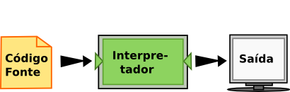
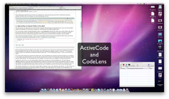

O Caminho do Programa¶
O objetivo deste livro é ensinar você a pensar como um cientista da computação. Essa maneira de pensar combina algumas das melhores características da matemática, da engenharia e das ciências naturais. Como os matemáticos, os cientistas da computação usam linguagens formais para representar ideias (especificamente, computações). Como os engenheiros, eles projetam coisas, montando sistemas a partir de componentes e avaliando as vantagens e desvantagens entre as alternativas. Como os cientistas, eles observam o comportamento de sistemas complexos, formam hipóteses e testam previsões.
A habilidade mais importante de um cientista da computação é a de solucionar problemas. A solução de problemas requer a habilidade de formular questões, pensar criativamente sobre soluções possíveis e expressar uma solução de forma clara e precisa. Ocorre que aprender a programar é uma excelente oportunidade de praticar a habilidade da solucionar problemas. É por isso que este capítulo se chama O Caminho do Programa.
Em um certo nível, você aprenderá a programar, uma habilidade que é útil em si mesma. Em um outro nível, você usará a programação como um meio para atingir um objetivo. À medida que você for avançando na leitura, esse objetivo se tornará mais claro.
Algoritmos¶
Se a habilidade de resolver problemas é uma parte central da ciência da computação, então as soluções que você cria por meio do processo de resolução de problemas também são importantes. Na ciência da computação, essas soluções são conhecidas como algoritmos. Um algoritmo é uma lista passo-a-passo de instruções que, caso seguidas exatamente, resolvem o problema sendo considerado.
Nosso objetivo na ciência da computação é considerar um problema e desenvolver um algoritmo que possa servir como uma solução genérica. Uma vez obtida tal solução, um computador pode ser utilizado para automatizar a execução. Dessa forma, programação é uma habilidade que permite ao cientista da computação pegar um algoritmo e representá-lo em uma notação (um programa) que possa ser executado por um computador. Esses programas são escritos utilizando linguagens de programação.
Teste seu entendimento
1.1.1: Qual a habilidade mais importante para um cientista da computação?
1.1.2: Um algoritmo é:
A linguagem de programação Python¶
A linguagem de programação que você vai aprender é Python. Python é um exemplo de linguagem de programação de alto nível; outras linguagens de alto nível que você já pode ter ouvido falar são C++, PHP e Java.
Como você deve ter imaginado, existem também as linguagens de baixo nível, às vezes chamadas de “linguagens de máquina” ou “linguagens assembly” (“linguagens de montagem”). Dito de maneira simples, o computador só consegue executar programas escritos em linguagens de baixo nível. Deste modo, programas escritos em linguagens de alto nível precisam ser processados antes que possam rodar. Esse processamento extra toma algum tempo, o que é uma pequena desvantagem das linguagens de alto nível. Mas as vantagens são enormes.
Primeiro, é muito mais fácil programar em uma linguagem de alto nível. É mais rápido escrever programas em uma linguagem de alto nível; os programas ficam mais curtos, mais fáceis de ler, mais simples de alterar, e é mais provável que estejam corretos. Segundo, as linguagens de alto nível são portáveis, o que significa que podem rodar em diferentes tipos de computador, com pouca ou nenhuma modificação. Programas em baixo nível só podem rodar em um único tipo de computador e precisam ser re-escritos para rodar em outro tipo.
Devido a essas vantagens, quase todos os programas são escritos em linguagens de alto nível. As de baixo nível são utilizadas somente para umas poucas aplicações especializadas.
Dois tipos de programas processam linguagens de alto nível, traduzindo-as para linguagens de baixo nível: interpretadores e compiladores. O interpretador lê um programa escrito em linguagem de alto nível e o executa, ou seja, faz o que o programa diz. Ele processa o programa um pouco de cada vez, alternadamente: ora lendo algumas linhas, ora realizando computações.
O compilador lê o programa e o traduz completamente antes que o programa comece a rodar. Neste caso, o programa escrito em linguagem de alto nível é chamado de código fonte, e o programa traduzido é chamado de código objeto ou executável. Uma vez que um programa é compilado, você pode executá-lo repetidamente, sem que precise de nova tradução.

Muitas linguagens modernas se utilizam desses dois processos. O código fonte é primeiramente compilado para uma linguagem de baixo nível, chamado de código em bytes (“byte code”), e então são interpretados por um programa chamado de máquina virtual. O Python usa ambos os processos, mas devido a forma com que os programadores interagem com essa linguagem, ela é em geral considerada uma linguagem interpretada.
Existem duas maneiras de usar o interpretador: no modo linha de comando (“shell mode”) e no modo de script (“program mode”). No modo de linha de comando, você digita programas em Python e o interpretador mostra o resultado. O exemplo a seguir ilustra o funcionamento do terminal Python (Python shell).
$ python3
Python 3.4.2 (default, Oct 8 2014, 13:08:17)
[GCC 4.9.1] on linux
Type "help", "copyright", "credits" or "license" for more information.
>>> 2 + 3
5
>>>
O símbolo >>> é chamado de prompt do Python. O interpretador
usa o prompt para indicar que está pronto para receber um comando. Ao
digitar 2 + 3, o interpretador avalia a expressão e responde
5. A seguir, ele fornece um novo prompt na linha seguinte,
indicando que ele está pronto para um novo comando.
Trabalhar diretamente no interpretador é conveniente para testar pequenos pedaços de código pois você recebe uma resposta rapidamente, como se você estivesse trabalhando nos seus problemas em uma folha de rascunho. Qualquer coisa maior que algumas linhas deve ser colocada em um script.
Você pode escrever um programa inteiro em um arquivo e usar o interpretador para executar o conteúdo do arquivo como um todo. Esse arquivo é normalmente chamado de código fonte. Por exemplo, nós podemos usar um editor de texto para criar o código fonte no arquivo chamado “programa1.py” com o seguinte conteúdo:
print("Meu primeiro programa soma os numeros 2 e 3:")
print(2 + 3)
Por convenção, arquivos que contém programas em Python tem nomes que terminam com a extensão .py.
Seguir essa convenção vai ajudar o seu sistema operacional e outros programas a identificar um arquivo contendo código python.
$ python programa1.py
Meu primeiro programa soma os numeros 2 e 3:
5
Esse exemplo mostra o Python sendo executado a partir da linha de comando de um terminal Unix. Em outros ambientes de desenvolvimento, os detalhes de execução de programas podem ser diferentes. Além disso, a maioria dos programas também vão ser mais interessantes.
Você quer aprender mais sobre Python?
Se você quiser aprender mais sobre como instalar e usar Python, aqui estão alguns links para vídeos:
- Installing Python for Windows mostra como instalar o Python no ambiente Windows Vista,
- Installing Python for Mac mostra como instalar no Mac OS/X, e
- Installing Python for Linux mostra como instalar no Linux a partir da linha de comando.
- Using Python mostra alguns detalhes sobre o terminal Python e código fonte.
Teste seu entendimento
1.2.1: O que é código fonte?
1.2.2: Qual a diferença entre uma linguagem de programação de alto nível e uma de baixo nível?
1.2.3: Escolha a melhor alternativa para completar os espaços 1 e 2 na
seguinte frase:
Ao comparar compiladores e interpretadores, um
compilador é como 1 enquanto um interpretador é como 2.
Formas especiais para rodar Python nesse livro¶
Esse livro fornece duas formas adicionais para executar os programas em Python. Ambas as técnicas foram projetadas para ajudar você a aprender a linguagem de programação Python. Elas vão ajudar você a melhorar o seu entendimento sobre o funcionamento dos programas.
Primeiro, você pode escrever, modificar e executar programas usando um interpretador especial de activecode que permite você executar código Python diretamente no texto do seu navegador. Embora essa não seja a forma com que os programas reais são escritos, esse interpretador fornece um excelente ambiente para aprender uma linguagem de programação como Python, pois você pode ir experimentando a linguagem a medida que você avança com a leitura.
Dê uma olhada no interpretador de activecode em funcionamento. Se você usar o código Python do exemplo anterior e torná-lo ativo, você verá que ele pode ser executado diretamente simplesmente clicando no botão Run. Experimente clicar no botão Run abaixo.
(ch01_1)
Agora tente modificar o programa. Primeiro modifique o texto do primeiro print, mudando a palavra soma por multiplica. Agora clique em Run. Você pode ver que o resultado do programa mudou, embora ele ainda forneça “5” como resposta. Modifique o segundo print trocando o símbolo de soma “+” pelo símbolo de multiplicação “*”. Clique em Run para ver o resultado.
Você pode também salvar as suas alterações para serem utilizadas mais tarde. As opções Save e Load permitem que você mantenha uma cópia do programa que você estiver trabalhando. Por exemplo, clique no botão Save agora. Você acaba de salvar o programa que está na janela do activecode. Agora faça algumas modificações e execute o programa clicando em Run. Esse programa foi modificado, mas clicando em Load você pode restaurar a versão salva previamente. (NOTA: esses recursos ainda não estão funcionando na versão em português).
Além do activecode, você pode também executar código Python por meio de uma ferramenta especial para visualização. Essa ferramenta, denominada codelens, permite que você controle os passos de execução de um programa. Ele também permite observar o conteúdo de todas as variáveis a medida em que elas são criadas e modificadas. O exemplo a seguir mostra o codelens em funcionamento, utilizando o mesmo programa visto anteriormente. Note que em activecode, o código fonte é executado do início ao fim e você só vê o resultado final. No codelens, você pode ver e controlar a execução do programa passo-a-passo.
Os exemplos nesse livro usam uma mistura do interpretador Python padrão, código fonte, activecode e codelens. Você será capaz de distinguir entre essas formas olhando para o prompt do Python no caso de código executado em linha de comando, o botão Run no activecode ou para os botões forward/backward no codelens.
(firstexample)
Teste seu entendimento
1.3.1: O interpretador de activecode permite que você (selecione todas as verdadeiras):
1.3.2: O codelens permite (selecione todas as verdadeiras):
Mais sobre programas¶
Um programa é uma sequência de instruções que especificam como executar uma computação. A computação pode ser algo tão complexo quanto exibir uma página de html em um navegador ou codificar um vídeo e transmití-lo pela internet. Pode ser também uma computação simbólica, como buscar e substituir uma palavra em um documento ou (estranhamente) compilar um programa.
Os detalhes são diferentes em diferentes linguagens, mas algumas instruções básicas aparecem em praticamente todas as linguagens.
- entrada
- Pega os dados do teclado, de um arquivo ou outro dispositivo.
- saída
- Mostra os dados na tela ou envia os dados para um arquivo ou outro dispositivo.
- lógica e matemática
- Realiza operações matemáticas básicas como soma e multiplicação, e operações lógicas como
e,ou, enegação. - execução condicional
- Verifica se certas condições são satisfeitas antes de executar a sequência apropriada de comandos.
- repetição
- Realiza algumas ações repetidamente, em geral com alguma variação.
Acredite se quiser: isso é praticamente tudo. Todos os programas que você já usou, não importa quão complicados, são feitos de instruções mais ou menos parecidas com essas. Assim, poderíamos definir programação como o processo de dividir uma tarefa grande e complexa em sub-tarefas cada vez menores, até que as sub-tarefas sejam simples o suficiente para serem executadas com uma dessas instruções básicas.
Teste seu entendimento
1.4.1: Um programa é:
O que é depuração?¶
Programar é um processo complicado e, como é feito por seres humanos, frequentemente conduz a erros. Erros em programas são chamados de bugs e o processo de encontrá-los e corrigi-los é chamado de depuração (debugging). Alguns afirmam que, em 1945, uma mariposa morta causou um problema no relé número 70 do painel F de um dos primeiros computadores da Universidade de Harvard, e o termo bug permaneceu em uso desde então. Para saber mais sobre este episódio histórico, veja first bug.
{kind=link}
Três tipos de erro podem acontecer em um programa: erros de sintaxe, erros de execução, e erros de semântica. É importante distinguir entre eles para encontrá-los mais rapidamente.
Teste seu entendimento
1.5.1: Depuração é:
Erros de sintaxe¶
Python só executa um programa se ele estiver sintaticamente correto; caso contrário, o processo falha e devolve uma mensagem de erro. Sintaxe se refere à estrutura de um programa e às regras sobre esta estrutura. Por exemplo, em português, uma frase deve começar com uma letra maiúscula e terminar com um ponto.
esta frase contém um erro de sintaxe. Assim como esta
Para a maioria dos leitores, uns errinhos de sintaxe não chegam a ser um problema significativo e é por isso que conseguimos ler a poesia moderna de E. E. Cummings sem cuspir mensagens de erro. Python não é tão indulgente. Se o seu programa tiver um único erro de sintaxe em algum lugar, o interpretador Python vai exibir uma mensagem de erro e vai terminar - e o programa não vai rodar. Durante as primeiras semanas da sua carreira como programador, você provavelmente perderá um bocado de tempo procurando erros de sintaxe. Conforme for ganhando experiência, entretanto, cometerá menos erros e os localizará mais rápido.
Teste seu entendimento
1.6.1: Qual alternativa corresponde a um erro de sintaxe?
1.6.2: Quem ou o que, tipicamente, encontra erros de sintaxe?
Erros de Execução (Runtime Errors)¶
O segundo tipo de erro é o erro de execução (runtime), que só aparece quando você roda o programa. Esses erros são também conhecidos como exceções, porque normalmente indicam que alguma coisa excepcional (e ruim) aconteceu.
Erros de execução são raros nos programas simples que você vai ver nos primeiros capítulos - então, pode demorar um pouco até você se deparar com um erro desse tipo.
Teste seu entendimento
1.7.1: Qual alternativa corresponde a um erro de execução?
Erros de semântica¶
O terceiro tipo de erro é o erro de semântica (também chamado de erro de lógica). Mesmo que o seu programa tenha um erro semântico, ele vai rodar com sucesso, no sentido de que o computador não vai gerar nenhuma mensagem de erro. Só que o programa não vai fazer a coisa certa, vai fazer alguma outra coisa. Especificamente, aquilo que você tiver dito para ele fazer.
O problema é que o programa que você escreveu não é aquele que você queria escrever. O significado do programa (sua semântica ou lógica) está errado. Identificar erros semânticos pode ser complicado, porque requer que você trabalhe de trás para frente, olhando a saída do programa e tentando imaginar o que ele está fazendo.
Teste seu entendimento
1.8.1: Qual alternativa corresponde a um erro semântico?
Depuração experimental¶
Uma das habilidades mais importantes que você vai desenvolver é a de depurar. Embora possa ser frustrante, depurar é uma das partes intelectualmente mais ricas, desafiadoras e interessantes da programação.
De certa maneira, a depuração é como um trabalho de detetive. Você se depara com pistas e tem que deduzir os processos e eventos que levaram aos resultados que aparecem.
Depurar também é como uma ciência experimental. Uma vez que você tem uma ideia do que está errado, você modifica o seu programa e tenta de novo. Se a sua hipótese estava correta, então você consegue prever o resultado da modificação e fica um passo mais perto de um programa que funciona. Se a sua hipótese estava errada, você tem que tentar uma nova. Como Sherlock Holmes mostrou, “Quando você tiver eliminado o impossível, aquilo que restou, ainda que improvável, deve ser a verdade.” (A. Conan Doyle, O signo dos quatro).
Para algumas pessoas, programação e depuração são a mesma coisa. Ou seja, programar é o processo de gradualmente depurar um programa, até que ele faça o que você quer. A idéia é começar com um programa que faça alguma coisa e ir fazendo pequenas modificações, depurando-as conforme avança, de modo que você tenha sempre um programa que funciona.
Por exemplo, o Linux é um sistema operacional que contém milhares de linhas de código, mas começou como um programa simples, que Linus Torvalds usou para explorar o chip Intel 80386. De acordo com Larry Greenfield, um dos primeiros projetos de Linus Torvalds foi um programa que deveria alternar entre imprimir AAAA e BBBB. Isso depois evoluiu até o Linux. (The Linux User’s Guide Versão Beta 1).
Capítulos posteriores farão mais sugestões sobre depuração e outras práticas de programação.
Teste seu entendimento
1.9.1: A diferença entre programação e depuração e:
Linguagens formais e naturais¶
Linguagens naturais são as linguagens que as pessoas falam, como o português, o inglês e o espanhol. Elas não foram projetadas pelas pessoas (muito embora as pessoas tentem colocar alguma ordem nelas); elas evoluíram naturalmente.
Linguagens formais são linguagens que foram projetadas por pessoas para aplicações específicas. Por exemplo, a notação que os matemáticos usam é uma linguagem formal, que é particularmente boa em denotar relações entre números e símbolos. Os químicos usam uma linguagem formal para representar a estrutura química das moléculas. E, mais importante:
Linguagens de programação são linguagens formais que foram desenvolvidas para expressar computações.
As linguagens formais tendem a ter regras estritas quanto à sintaxe. Por exemplo,
3+3=6
é uma expressão matemática sintaticamente correta, mas 3=+6$ não
é. H2O é um nome químico sintaticamente correto, mas 2Zz não é.
As regras de sintaxe são de dois tipos, um relacionado aos tokens, outro à estrutura. “Tokens” são os elementos básicos da linguagem, como as palavras, números, e elementos químicos. Um dos problemas com 3=+6$ é que $ não é um token válido em linguagem matemática (pelo menos
até onde sabemos). Do mesmo modo, 2Zz é inválida porque não existe nenhum elemento cuja abreviatura seja Zz.
O segundo tipo de erro de sintaxe está relacionado à estrutura de uma expressão—
quer dizer, ao modo como os tokens estão arrumados. A expressão 3=+6$ é
estruturalmente inválida, porque você não pode colocar um sinal de “mais” imediatamente após um sinal de “igual”. Do mesmo modo, fórmulas moleculares devem ter índices subscritos colocados depois do nome do elemento, não antes.
Quando você lê uma frase em português ou uma expressão em uma linguagem formal, você tem de imaginar como é a estrutura da frase (embora, em uma linguagem natural, você faça isso inconscientemente). Este processo é chamado parsing (análise sintática).
Por exemplo, quando você ouve a frase, “O outro sapato caiu”, você entende que “o outro sapato” é o sujeito e “caiu” é o verbo. Uma vez que você analisou a frase, consegue entender o seu significado, ou a semântica da frase. Assumindo que você saiba o que é um sapato e o que significa cair, você entenderá o sentido geral dessa frase.
Muito embora as linguagens formais e as naturais tenham muitas características em comum — tokens, estrutura, sintaxe e semântica — existem muitas diferenças:
- ambiguidade
- As linguagens naturais estão cheias de ambiguidades, que as pessoas contornam usando pistas contextuais e outras informações. Já as linguagens formais são desenvolvidas para serem quase ou totalmente desprovidas de ambiguidade, o que significa que qualquer expressão tem precisamente só um sentido, independentemente do contexto.
- redundância
- Para compensar a ambiguidade e reduzir mal-entendidos, emprega-se muita redundância nas linguagens naturais, o que frequentemente as torna prolixas. As linguagens formais são menos redundantes e mais concisas.
- literalidade
As linguagens naturais estão cheias de expressões idiomáticas e metáforas. Se uma pessoa diz “O outro sapato caiu”, é possível que não haja sapato algum e nada caindo.
Tip
Você vai precisar encontrar a piada original para entender o significado de “o outro sapato caiu”. O Yahoo! Answers pensa que sabe!
Pessoas que crescem falando uma linguagem natural—todo mundo—muitas vezes têm dificuldade de se acostumar com uma linguagem formal. De certa maneira, a diferença entre linguagens formais e naturais é como a diferença entre poesia e prosa, porém mais acentuada:
- poesia
- As palavras são usadas pela sua sonoridade, além de seus sentidos, e o poema como um todo cria um efeito ou uma reação emocional. A ambiguidade não é apenas frequente, mas na maioria das vezes, proposital.
- prosa
- O sentido literal das palavras é mais importante, e a estrutura contribui mais para o significado. A prosa é mais fácil de analisar do que a poesia, mas ainda é muitas vezes ambígua.
- programa
- O significado de um programa de computador é exato e literal, e pode ser inteiramente entendido pela análise de seus tokens e de sua estrutura.
Aqui vão algumas sugestões para a leitura de programas (e de outras linguagens formais). Primeiro, lembre-se de que linguagens formais são muito mais densas do que linguagens naturais, por isso, levam mais tempo para ler. A estrutura também é muito importante, logo, geralmente não é uma boa ideia ler de cima para baixo, da esquerda para a direita. Em vez disso, aprenda a analisar o programa na sua cabeça, identificando os tokens e interpretando a estrutura. Finalmente, os detalhes são importantes. Pequenas coisas como erros ortográficos e má pontuação, com as quais você pode se safar nas linguagens naturais, podem fazer uma grande diferença em uma linguagem formal.
Teste seu entendimento
1.10.1: Entre as diferenças das linguagens formais e naturais podemos citar:
1.10.2: Verdadeiro ou Falso: ler um programa é como ler outras formas de texto.
Um primeiro programa típico¶
Tradicionalmente, o primeiro programa escrito em uma nova linguagem de programação é chamado de “Ola Mundo!” porque tudo que ele faz é apresentar as palavras “Ola Mundo!”. Em Python, ele é assim:
print("Ola Mundo!")
Isso é um exemplo da função print, que na realidade não “imprime” nada em papel. Ela apresenta um valor na tela. Neste caso, o resultado é o texto:
Ola Mundo!
Experimente a seguir o activecode usando esse mesmo exemplo.
(ch01_2)
As aspas no programa marcam o começo e o fim do texto. Elas não aparecem no resultado final.
Algumas pessoas julgam a qualidade de uma linguagem de programação pela simplicidade do programa “Ola Mundo!”. Por esse padrão, Python se sai tão bem quanto possível.
Note
Nota sobre a versão em Português: embora seja possível o uso de acentos no Python, a versão do activecode que estamos utilizando ainda não suporta palavras acentuadas, como em “Olá Mundo!”.
Teste seu entendimento
1.11.1: A função print:
Comentários¶
À medida que os programas se tornam maiores e mais complicados, eles se tornam mais difíceis de ler. As linguagens formais são densas e em geral é difícil olhar para um pedaço de código e entender o que ele faz ou porquê. Por isso, é uma boa ideia colocar anotações em seus programas para explicar, em linguagem natural, o que ele está fazendo. Essas anotações são chamadas de comentários.
Um comentário em um programa é um texto que serve para ser lido apenas por humanos - ele é completamente ignorado pelo interpretador. Em Python, o símbolo # é usado para dar início a um comentário, e o resto da linha é ignorado. Temos a seguir uma nova versão do Olá Mundo!.
(ch01_3)
Observe que ao rodar esse programa, ele continua imprimindo apenas a frase “Ola Mundo!” na tela. Nenhum comentário é exibido. Note também que nós deixamos uma linha em branco no programa, antes do print. Linhas em branco também são ignoradas pelo interpretador, mas essas linhas e os comentários podem tornar o seu programa muito mais fáceis de serem analisados por humanos. Use-os livremente!
Teste seu entendimento
1.12.1: Para que servem comentários?
Scratch Editor
Glossário¶
- activecode
- Um interpretador Python especial que permite executar código Python dentro de um navegador da web.
- algoritmo
- Um processo passo-a-passo para a solução de um problema.
- bug
- Um erro em um programa.
- codelens
- Um ambiente interactivo que permite ao utilizador controlar a execução do passo a passo de um programa Python
- código em bytes (byte code)
- Uma linguagem intermediária entre o código-fonte e código objeto. Muitas linguagens modernas primeiramente compilam o código-fonte em código em bytes e então interpretam o código em bytes com um programa chamado máquina virtual.
- código fonte (source code)
- Um programa, armazenado em um arquivo, em uma linguagem de alto nível antes de ser compilado ou interpretado.
- código objeto (object code)
- A saída do compilador, depois que traduz o programa.
- comentário
- Informação em um programa que se destina a outros programadores (ou qualquer um lendo o código-fonte) e não tem efeito sobre a execução do programa.
- compilar
- Traduzir um programa escrito em uma linguagem de alto nível em um de baixo nível de uma só vez, em preparação para execução posterior.
- depuração
- O processo de encontrar e remover qualquer um dos três tipos de erros de programação.
- erro de execução
- Um erro que só ocorre durante a execução do programa e evita que o programa continue.
- erro de semântica
- Um erro que faz o programa fazer algo diferente do que o programador pretendia.
- erro de sintaxe
- Um erro em um programa que o torna impossível de analisar — e portanto impossível de interpretar.
- exceção
- Outro nome para um erro de execução.
- executável
- Outro nome para o código-objeto que está pronto para ser executado.
- interpretar
- Executar um programa em uma linguagem de alto nível, traduzindo apenas uma linha de cada vez.
- linguagem de alto nível
- Uma linguagem de programação como Python que é projetada para ser fácil de ler e escrever por seres humanos.
- linguagem de baixo nível
- Uma linguagem de programação que é projetada para ser fácil para um computador executar. Também chamada de linguagem de máquina ou linguagem de montagem.
- linguagem de programação
- Uma notação formal para representar soluções.
- linguagem formal
- Qualquer linguagem projetada pelas pessoas para um propósito específico, como para representar ideias matemáticas ou programas de computador; todas as linguagens de programação são linguagens formais.
- linguagem natural
- Qualquer linguagem falada por pessoas, que evoluiu naturalmente.
- modo linha de comando
- Um modo de usar o Python onde os comandos são digitados na linha do prompt e os resultados são exibidos imediatamente. Compare com o modo script e veja também a entrada em terminal Python.
- parse (análise sintática)
- Para examinar um programa e analisar a estrutura sintática.
- portabilidade
- Propriedade de um programa que permite a sua execução em mais de um tipo de computador.
- Função usada em um programa ou script que faz com que o interpretador Python mostre um valor no seu dispositivo de saída (por exemplo, a tela do computador).
- programa
- Uma sequência de instruções que especificam as ações e cálculos a serem realizados por um computador.
- prompt
- Símbolo “>>>” usado pelo terminal Python quando está pronto para receber um comando.
- resolução de problemas
- O processo de formulação de um problema, encontrar uma solução, e expressar a solução.
- script
- Um pequeno programa. Nesse livro, script será usado como sinônimo de um programa em Python.
- semântica
- O significado de um programa.
- sintaxe
- A estrutura de um programa.
- terminal Python (Python shell)
- Uma interface para o interpretador Python. O usuário de um terminal Python digita comandos no prompt (>>>), e pressiona a tecla “return” para enviar esses comandos para o interpretador processar.
- token
- Um dos elementos básicos da estrutura sintática de um programa, análogo a uma palavra em uma linguagem natural. Também chamado de item léxico.